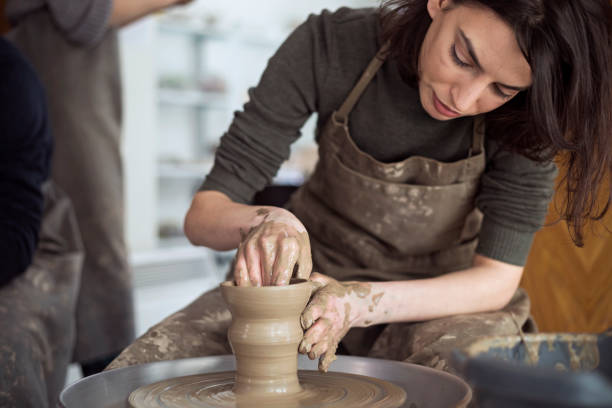
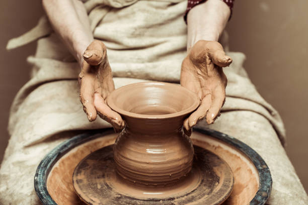

QUIENES SOMOS
Somos un grupo de artistas y artesanos apasionados por la creación de objetos únicos y originales en cerámica. Nos dedicamos a explorar diferentes técnicas y estilos para ofrecerte una amplia variedad de piezas, desde vajillas y jarrones hasta esculturas y adornos para el hogar. Además de nuestra tienda en línea, también participamos en ferias y eventos de arte y artesanía en toda la región. Estamos comprometidos con la calidad y la excelencia en todo lo que hacemos, y esperamos que disfrutes explorando nuestra selección de productos artesanales en cerámica.
Nos esforzamos por ofrecer a nuestros clientes piezas únicas, de alta calidad y con un diseño excepcional y nos aseguramos de que nuestras prácticas sean éticas y sostenibles, apoyando el trabajo justo y respetando el medio ambiente. Estamos comprometidos con la producción responsable y socialmente responsable, y esperamos seguir creando productos que satisfagan las expectativas de nuestros clientes y contribuyan al desarrollo sostenible de nuestras comunidades.
La creación de piezas de cerámica a mano ofrece la oportunidad de conectarnos con nuestros instintos creativos y desarrollar habilidades técnicas en el modelado, la texturización, el esmaltado y la cocción. Además, el proceso de crear con las manos piezas de cerámica puede ser terapéutico y relajante, lo que beneficia la salud mental y emocional de las personas. La práctica de la cerámica también fomenta el trabajo en equipo, la colaboración y el intercambio de conocimientos.
Nuestra visión es convertirnos en un referente en la promoción y difusión de la cerámica artesanal a nivel mundial, ofreciendo a nuestros clientes una amplia selección de piezas únicas y auténticas, así como una experiencia de compra excepcional. Nos esforzamos por apoyar y visibilizar el trabajo de artesanos de todo el mundo, preservando y celebrando su rica cultura y tradiciones. Además, estamos comprometidos en seguir mejorando nuestras prácticas éticas y sostenibles para contribuir a la protección del medio ambiente y el bienestar de las comunidades locales. Queremos ser un puente entre la creatividad y el talento de los artistas y la apreciación y admiración de los amantes de la cerámica en todo el mundo.
